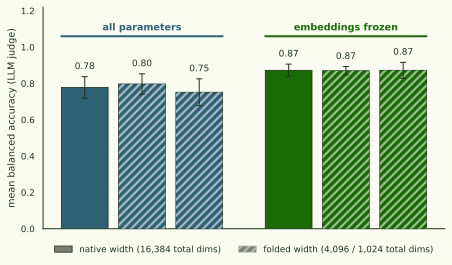
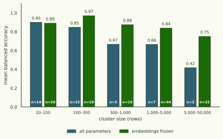
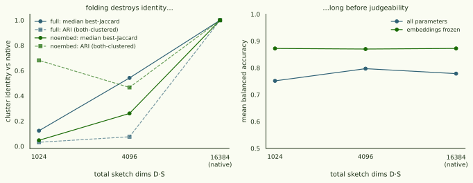

Clustering the sketch: conductance communities in a 262k-token gradient kernel, scored by an LLM judge
The error-law page established what a CountSketched preconditioned gradient kernel costs and how accurate it is; this page asks whether the thing it preserves is useful. We run on 261,632 per-token gradient rows of Pythia-14M (512 Pile sequences × 512 positions, D·S = 4096 native), in two arms — all parameters vs embeddings frozen — and at two folded widths per arm (1024 and 256 total dims, derived offline by , no model passes). Every discovered cluster is then scored by an LLM judge with the : explain the cluster from ten members, then classify held-out members against distractors; balanced accuracy is the cluster's "goodness". Six clusterings, one seeded judge, cross-run membership matching.
Freezing the embeddings doesn't just shrink the sketch error — it changes what the clustering finds (cross-arm ARI 0.03–0.05: near-disjoint), and what the no-embed kernel finds is better: mean judge accuracy 0.87 vs 0.78, winning every size bin above 100 rows.

§1 Embeddings change what is discovered
The error-law study showed the embedding block's ε-floor heavy hitters dominate the full kernel's geometry at 14M; here that has a semantic consequence. Full-native and no-embed-native agree at ARI 0.047 over all rows — and 0.003 restricted to rows clustered in both — with median best-Jaccard 0.01 in both directions: there is essentially no cluster in one arm whose membership survives into the other. This is not sketch noise (the two folded widths of the full arm agree with each other at ARI 0.52–0.67). Freezing embeddings is not a cost optimisation; it selects a different — and per §2, better — similarity structure. The same lesson at MoE scale: excluding expert tensors flips 41% of nearest-neighbour structure on granite-1B (E2, MoE page to follow).
§2 No-embed clusters are better at matched size
Goodness falls with cluster size in both arms and the two inventories have very different size profiles (median scored size 158 vs 1,423), so the honest comparison is within size bins:

§3 Folding destroys identity long before judgeability

§4 Good clusters are the reproducible ones — until the sketch dies
Joining goodness with cross-width membership matching (full arm, native↔1024): the top goodness quartile reproduces at median Jaccard 0.99 vs 0.54 for the bottom quartile, matched pairs' goodness scores agree at Pearson 0.89, and Spearman(goodness, best-Jaccard) = 0.37. At native↔256 the relationship inverts (top-quartile Jaccard 0.001, bottom 0.77): heavy folding kills the small coherent clusters first and preserves the large mushy ones. Goodness and repeatability co-vary while the representation is faithful, and decouple in opposite directions when it isn't — so the pair (goodness, cross-width Jaccard) is a usable health check for any production width. (No-embed joins are underpowered — 120-cluster sampled scoring leaves 14–22 matched scored pairs.)
What the judge is actually looking at — every scored cluster, both native arms, hover for members:
- rows
- 261,632 per-token gradients — Pythia-14M, pile-10k, 512 seqs × 512 positions, marginal preconditioner q = 1/(v+ε), CountSketch D=4 × S=1024 (fp16 features)
- arms
- all parameters (P = 14.1M) vs embeddings frozen (P = 1.2M non-embedding); widths: native 4096 + offline folds to 1024 / 256 total dims
- clustering
- ACL push PPR (α = 0.001, εPPR = 1e-5 recalibrated from the paper's 1e-7), k = 45 self-tuning kNN graph, sweep cuts, Algorithm-1 discovery; full arm termination 0.001/uncapped, no-embed 0.02/cap-800 (config asymmetry noted)
- scoring
- detection protocol: explainer + judge = claude-sonnet-5 (seed 20260714), 10 train / 10 held-out / 10 distractors, balanced accuracy; zero skips on full arms, seeded 120-cluster samples on no-embed runs
- matching
- per-cluster best-Jaccard counterparts over shared rows + run-level ARI/NMI; goodness×Jaccard join on matched scored pairs
clustering/scoring.py; figures scripts/make_pilot_figures.py; results doc commit c02e948).
Artefacts · HF arcadia-impact/gradient-kernel-cluster-pilot-20260714 (all six clusterings, scores, comparisons, membership matches, PILOT_RESULTS.md).
Compute · gk-ladder A100 + gk-gpu RTX PRO 4000, ≈$25; ~10k claude-sonnet-5 judge calls. Pods stopped after verified upload.